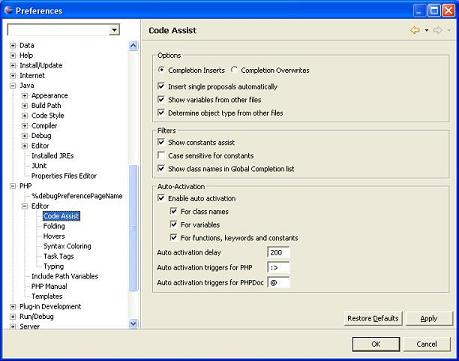

You can use Code Assist to help insert or finish a tag or function or line of code in the editor as well as to select and insert templates.
The location of the cursor in the source file provides the context for the code assist to offer suggestions for completion.
To request code assist while in the Editor:
Press Ctrl+Space
In addition, you can set a preference that causes code assist to pop up automatically when certain characters are typed, as in HTML and XML.
Select Preferences from the Window menu.
Go to PHP | Editor | Code Assist.
Select your configuration options.

Select Preferences from the Window menu.
Select Web and XML Files from the navigator, followed by HTML Files. Expand. Select HTML Source.
In the Code Assist group box, select the Auto-Activation check box.
Supply any additional characters that should trigger code assist .
If your cursor is in a position where code assist is available, a pop-up list of all available choices is displayed. For each of these choices, a brief description of the code is provided.
Complete the options for HTML Styles and HTML Source.